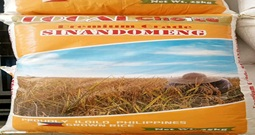
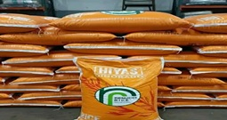
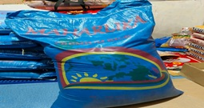

RRJ Rice Business
RRJ Rice Business
Fresh, quality grains from local farms. Great taste, good value, perfect for everyday meals.

Sinandomeng
grain, fluffy, slightly sticky. Very popular for daily meals.
₱1,100

Dinorado Aromatic
soft texture, shiny grains. Often considered premium.
₱1,500

Maharlika
Top quality whole grains. Soft, aromatic, and stays good even when cold.
₱1,650